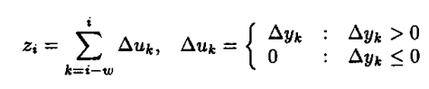

Blood Pressure Signal Preprocessing
The top plot in Figure xx shows an arterial blood pressure waveform which was measured invasively in a fetal lamb. Notice that the notice after the main pressure peak, there is a second reflection peak, which results from closing of the aortic value.
This waveform is relatively noisy, and the peak is not particularly easy to identify. For this reason, it is necessary to apply a filtering algorithm to simplify peak detection. First a first order low pass filter with a cut-off frequency of 25Hz is applied, to smooth the small spikes in the pressure waveform, as shown in the figure below. The first order low pass filter’s equation is given below.
Next the slow sum function is applied. The slope sum function is defined as:

Where the optimal value of the windowing constant k is the number of samples in the rising edge of the signal [2]. For the fetal pig application, we chose k=15, based upon visual inspection of pre-existing fetal lamb blood pressure recordings, which are very similar to fetal pigs in terms of blood pressure and heart rate. The plot below illustrates shows a plot of a fetal lamb’s blood pressure, and the corresponding slope filtered output for that blood pressure waveform.
Notice that the low pass filter removes the high frequency ridges from the blood pressure waveform, leaving only the low frequency content that corresponds to the expansion and contractions of the hearts ventricles.
The slope sum function improves the signal by establishing a consistent baseline of zero, eliminating the effects of DC drifts in the measurement instrument. The slope sum function also sharpens the peaks, which makes the problem of automatic peak detection far less ambiguous.
Testing
The algorithm was evaluated against the following test blood pressure waveforms.
- MIT Database of non-invasive blood pressure recordings
- Pulse oximeter of my own heart, taken while serving as test subject for a maternal health sequence.
- Invasive fetal lamb blood pressure recordings, taken by an Australian research group.
Blood Pressure Peak Detection
The blood pressure pulse detection algorithm is a state machine. The high level overview of the algorithm is given by the flow chart below.
To ensure that the peak detector only triggers on unique blood pressure pulses, a refractory period is applied between peaks, and the algorithm does not begin peak detection until the rising edge is detected and the signal magnitude is greater than the peak threshold. The peak threshold is calculated as ½ of the average of the last five peaks.
The point roll algorithm for peak detection works by comparing the value of the current sample to the value (u[n]) of the fourth more recent sample (u[n-4]). This operation is similar to the backwards approximation of the first derivative. A peak is detected when u[n-4] > u[n], which corresponds to a slow of zero.